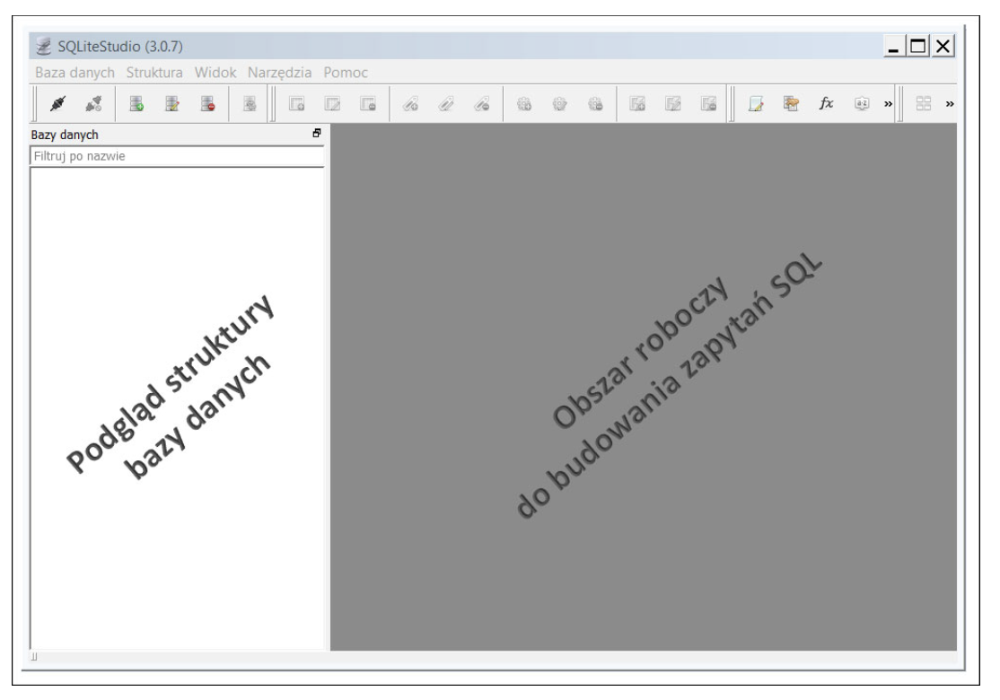

📘 Wprowadzenie: od prostych plików do systemów zarządzania bazami danych
Zanim zaczniemy korzystać z profesjonalnych systemów zarządzania bazami danych (DBMS), warto zrozumieć, dlaczego są one potrzebne. Na początku dane często przechowuje się w plikach tekstowych, np. CSV (Comma Separated Values). Pliki te można łatwo tworzyć i edytować, np. w Excelu, LibreOffice czy nawet w Notatniku.
Jednak takie „proste bazy plikowe” mają swoje ograniczenia:
brak kontroli poprawności danych (np. brak numeru domu, kodu pocztowego lub miejscowości),
trudność w wyszukiwaniu i filtrowaniu danych,
brak powiązań między danymi (relacji),
ryzyko duplikacji i błędów,
problemy przy równoczesnym dostępie wielu użytkowników.
Relacyjne systemy baz danych, takie jak PostgreSQL czy SQLite, rozwiązują te problemy. Dane są tam przechowywane w tabelach o jasno określonej strukturze (kolumny, typy danych), a system dba o integralność i spójność informacji. Zanim jednak przejdziemy do PostgreSQL, przyjrzyjmy się, jak wygląda „prosta baza plikowa” i jak można ją przekształcić w prawdziwą bazę danych.
SQLite
Jak wspomniano na wykładzie, dane można gromadzić w różnego rodzaju bazach danych. Często jednak potrzebne jest nam szybkie i łatwe rozwiązanie, bez konieczności mozolnego budowania architektury klient-serwer. Chcemy bowiem przechowywać dane w prostym pliku i edytować je równie łatwo jak w przypadku dokumentu tekstowego, takiego jak w programie Word. W takich przypadkach najbardziej optymalne jest użycie właśnie SQLite. SQLite jest najczęściej wykorzystywanym na świecie systemem zarządzania bazą danych. Został zastosowany w iPhonach, iPadach, w urządzeniach z systemem operacyjnym Android i Windows Mobile. Znajdziesz go również w termostatach, a także w samochodowych systemach komputerowych. Jest też wykorzystywany w satelitach i w wielu innych nowoczesnych urządzeniach, w przypadku których konieczne jest przechowywanie danych i proste ich przeszukiwanie. Z SQLite korzysta w dużym stopniu zarówno system operacyjny Windows, jak i system samolotu Airbus A350 XWB. Jest on więc stosowany wszędzie tam, gdzie istotna jest łatwość korzystania z niego oraz niskie koszty stałe. Jest również doskonały do przygotowywania prototypów baz danych dla przedsiębiorstw. Jednak coś za coś — z uwagi na brak serwera zarządzającego dostępem do bazy danych SQLite nie może być jednocześnie wykorzystywany przez wielu użytkowników. Nie jest bowiem możliwe edytowanie tego samego pliku przez wiele osób w tym samym czasie. Ten system zarządzania bazą danych nadaje się natomiast świetnie do celów szkoleniowych.
import sqlite3import csv# Połączenie z bazą (plik .db zostanie utworzony, jeśli nie istnieje)conn = sqlite3.connect("klienci.db")cur = conn.cursor()# Utworzenie tabelicur.execute("""CREATE TABLE IF NOT EXISTS klienci ( dane_osobowe TEXT, adres TEXT, produkty INTEGER);""")# Wczytanie danych z pliku CSVwithopen("klienci_produkty_v2.csv", newline='', encoding='utf-8') as csvfile: reader = csv.DictReader(csvfile)for row in reader: cur.execute(""" INSERT INTO klienci (dane_osobowe, adres, produkty) VALUES (?, ?, ?) """, (row['dane_osobowe'], row['adres'], row['produkty']))# Zapisanie zmian i zamknięcie połączeniaconn.commit()conn.close()print("Dane zostały zaimportowane do bazy danych klienci.db")
Dane zostały zaimportowane do bazy danych klienci.db
import sqlite3import pandas as pddb_file ="klienci.db"# Połączenie z bazą SQLite (plik zostanie utworzony jeśli nie istnieje)conn = sqlite3.connect(db_file)cur = conn.cursor()# Pobranie 10 pierwszych rekordów do DataFramedf = pd.read_sql_query("SELECT * FROM klienci LIMIT 10;", conn)# Wyświetlenie DataFramedf
id
dane_osobowe
adres
produkty
0
1
Katarzyna Wiśniewski
ul. Lipowa 1,
Słuchawki, Router, Drukarka, Telefon
1
2
Anna Grabowska
ul. Mickiewicza ,
Telefon, Laptop, Kamera internetowa, Słuchawki
2
3
Marek Czerwińska
ul. Słoneczna ,
Router
3
4
Piotr Król
ul. Szkolna 27,
Monitor, Tablet, Klawiatura
4
5
Marek Kowalski
ul. Polna ,
Monitor
5
6
Michał Wójcik
ul. Spacerowa 30,
Mysz, Monitor
6
7
Anna Baran
ul. Lipowa , 30-400
Mysz
7
8
Adam Kowalski
ul. Mickiewicza , 60-100
Monitor, Drukarka
8
9
Marek Czerwińska
ul. Lipowa , 35-100 Poznań
Laptop, Słuchawki, Router
9
10
Paweł Pawlak
ul. Spacerowa ,
Mysz, Kamera internetowa, Laptop
# Zamknięcie połączeniaconn.close()

Nowa baza “wyklikana”
Nowa baza z pliku
Prosty kod sql
Załadowanie tabel i danych z kodu pliku sql
DDL w SQLite
1. Tworzenie tabeli klienci
Tworzymy tabelę, jeśli jeszcze nie istnieje
CREATETABLEIFNOTEXISTS klienci ( dane_osobowe TEXT, -- pole z imieniem i nazwiskiem adres TEXT, -- pole z pełnym adresem produkty TEXT -- pole z produktami, w wersji nienormalizowanej (lista w jednej komórce));
INSERT przykładowego rekordu do demonstracji działania
Tabela zakupy przechowuje produkty, a klient_id łączy je z klientem.
Redukcja redundancji i łatwiejsze zarządzanie danymi.
Krok 3 – Trzecia Postać Normalna (3NF)
Cel: pełna atomizacja danych – dzielimy adres na ulicę, numer, kod, miasto.
import sqlite3import pandas as pd# Wczytanie CSVdf = pd.read_csv('klienci_produkty_v2.csv') # kolumny: dane_osobowe, adres, produkty# Utworzenie połączenia z bazą SQLiteconn = sqlite3.connect('klienci_normalizacja.db')cur = conn.cursor()# ===================================================# 1. Tworzymy tabele w 3NF# ===================================================cur.execute('''CREATE TABLE IF NOT EXISTS adresy ( adres_id INTEGER PRIMARY KEY AUTOINCREMENT, ulica TEXT, numer TEXT, kod TEXT, miasto TEXT)''')cur.execute('''CREATE TABLE IF NOT EXISTS klienci ( klient_id INTEGER PRIMARY KEY AUTOINCREMENT, dane_osobowe TEXT, adres_id INTEGER, FOREIGN KEY (adres_id) REFERENCES adresy(adres_id))''')cur.execute('''CREATE TABLE IF NOT EXISTS zakupy ( klient_id INTEGER, produkt TEXT, FOREIGN KEY (klient_id) REFERENCES klienci(klient_id))''')conn.commit()# ===================================================# 2. Wypełnienie tabel# ===================================================# Pomocnicza funkcja do rozdzielania adresudef rozdziel_adres(adres):try:# zakładamy format: "ul. Lipowa 12, 00-001 Warszawa" czesci = adres.split(',') ulica_numer = czesci[0].strip().rsplit(' ', 1) ulica = ulica_numer[0] numer = ulica_numer[1] iflen(ulica_numer) >1else'' kod_miasto = czesci[1].strip().split(' ', 1) iflen(czesci) >1else ['', ''] kod = kod_miasto[0] miasto = kod_miasto[1] iflen(kod_miasto) >1else''return ulica, numer, kod, miastoexcept:return'', '', '', ''# Dodanie adresów i przypisanie adres_idadres_map = {} # mapowanie pełnego adresu na adres_idfor index, row in df.iterrows(): adres = row['adres']if adres notin adres_map: ulica, numer, kod, miasto = rozdziel_adres(adres) cur.execute(''' INSERT INTO adresy (ulica, numer, kod, miasto) VALUES (?, ?, ?, ?) ''', (ulica, numer, kod, miasto)) adres_id = cur.lastrowid adres_map[adres] = adres_id# Dodanie klienta cur.execute(''' INSERT INTO klienci (dane_osobowe, adres_id) VALUES (?, ?) ''', (row['dane_osobowe'], adres_map[adres])) klient_id = cur.lastrowid# Rozdzielenie produktów i dodanie do zakupy produkty = [p.strip() for p instr(row['produkty']).split(',')]for produkt in produkty:if produkt: # pomijamy puste cur.execute(''' INSERT INTO zakupy (klient_id, produkt) VALUES (?, ?) ''', (klient_id, produkt))conn.commit()conn.close()print("Import i normalizacja zakończone!")
Import i normalizacja zakończone!
Opis działania:
Adresy są rozdzielane na ulica, numer, kod, miasto → tabela adresy.
Klienci trafiają do tabeli klienci z adres_id.
Produkty są rozdzielane i dodawane do tabeli zakupy.
Każdy klient ma unikalny klient_id, więc jeśli kupił kilka produktów, w zakupy będzie kilka wierszy.
import sqlite3import pandas as pdconn = sqlite3.connect('klienci_normalizacja.db')# Wyświetlenie 10 pierwszych klientówdf_klienci = pd.read_sql('SELECT * FROM klienci LIMIT 10', conn)df_klienci.head(10)
klient_id
dane_osobowe
adres_id
0
1
Katarzyna Wiśniewski
1
1
2
Anna Grabowska
2
2
3
Marek Czerwińska
3
3
4
Piotr Król
4
4
5
Marek Kowalski
5
5
6
Michał Wójcik
6
6
7
Anna Baran
7
7
8
Adam Kowalski
8
8
9
Marek Czerwińska
9
9
10
Paweł Pawlak
10
# Wyświetlenie 10 pierwszych zakupówdf_zakupy = pd.read_sql('SELECT * FROM zakupy LIMIT 10', conn)df_zakupy
klient_id
produkt
0
1
Słuchawki
1
1
Router
2
1
Drukarka
3
1
Telefon
4
2
Telefon
5
2
Laptop
6
2
Kamera internetowa
7
2
Słuchawki
8
3
Router
9
4
Monitor
conn.close()
Normalizacja tabeli klienci – pełne podsumowanie
Tabela początkowa (przed normalizacją)
Nazwa tabeli: klienci
Liczba kolumn: 3 (dane_osobowe, adres, produkty)
Typy danych: wszystkie TEXT (nienormalizowane)
Problemy:
Brak klucza głównego → brak jednoznacznej identyfikacji rekordu.
Wielowartościowa kolumna produkty → złamanie zasad atomowości.
Imię/nazwisko i adres w jednej kolumnie → brak pełnej atomowości.
Trudności w analizie i wyszukiwaniu.
⸻
Proces normalizacji krok po kroku
Krok 0 – Dodanie klucza głównego
Kolumna id jako PRIMARY KEY.
Każdy rekord jednoznacznie identyfikowany.
Krok 1 – 1NF
Rozdzielenie wielowartościowej kolumny produkty na osobne wiersze.
Jeden wiersz = jeden klient + jeden produkt.
Cel: każda kolumna jest atomowa.
Krok 2 – 2NF
Rozdzielenie danych, które zależą tylko od klienta (adres, imię/nazwisko), do osobnej tabeli klienci.
Produkty przeniesione do tabeli zakupy.
Relacja: klient_id w zakupy → klient_id w klienci (1:N).
Krok 3 – 3NF
Rozdzielenie adresu na atomowe kolumny: ulica, numer, kod, miasto → tabela adresy.
W tabeli klienci pozostaje tylko adres_id jako klucz obcy.
Relacje:
klienci.adres_id → adresy.adres_id (1:1)
zakupy.klient_id → klienci.klient_id (1:N)
import pandas as pd# Wczytanie CSVdf = pd.read_csv('klienci_produkty_v2.csv') # kolumny: dane_osobowe, adres, produkty# Plik wynikowy SQLsql_file =open('klienci_3nf.sql', 'w', encoding='utf-8')# ===================================================# 1. Tworzenie tabel# ===================================================sql_file.write("""-- Tabele w 3NFCREATE TABLE IF NOT EXISTS adresy ( adres_id INTEGER PRIMARY KEY AUTOINCREMENT, ulica TEXT, numer TEXT, kod TEXT, miasto TEXT);CREATE TABLE IF NOT EXISTS klienci ( klient_id INTEGER PRIMARY KEY AUTOINCREMENT, dane_osobowe TEXT, adres_id INTEGER, FOREIGN KEY (adres_id) REFERENCES adresy(adres_id));CREATE TABLE IF NOT EXISTS zakupy ( klient_id INTEGER, produkt TEXT, FOREIGN KEY (klient_id) REFERENCES klienci(klient_id));""")# ===================================================# 2. Generowanie INSERT dla wszystkich danych# ===================================================adres_map = {} # mapowanie pełnego adresu na adres_idadres_id_counter =1klient_id_counter =1def rozdziel_adres(adres):try: czesci = adres.split(',') ulica_numer = czesci[0].strip().rsplit(' ', 1) ulica = ulica_numer[0] numer = ulica_numer[1] iflen(ulica_numer) >1else'' kod_miasto = czesci[1].strip().split(' ', 1) iflen(czesci) >1else ['', ''] kod = kod_miasto[0] miasto = kod_miasto[1] iflen(kod_miasto) >1else''return ulica, numer, kod, miastoexcept:return'', '', '', ''for index, row in df.iterrows(): adres = row['adres']if adres notin adres_map: ulica, numer, kod, miasto = rozdziel_adres(adres) sql_file.write(f"INSERT INTO adresy (adres_id, ulica, numer, kod, miasto) VALUES ({adres_id_counter}, '{ulica.replace('\'','\'\'')}', '{numer}', '{kod}', '{miasto}');\n") adres_map[adres] = adres_id_counter adres_id_counter +=1# Dodanie klienta sql_file.write(f"INSERT INTO klienci (klient_id, dane_osobowe, adres_id) VALUES ({klient_id_counter}, '{row['dane_osobowe'].replace('\'','\'\'')}', {adres_map[adres]});\n")# Rozdzielenie produktów produkty = [p.strip() for p instr(row['produkty']).split(',')]for produkt in produkty:if produkt: sql_file.write(f"INSERT INTO zakupy (klient_id, produkt) VALUES ({klient_id_counter}, '{produkt.replace('\'','\'\'')}');\n") klient_id_counter +=1sql_file.close()print("Plik SQL 'klienci_3nf.sql' został wygenerowany!")
Plik SQL 'klienci_3nf.sql' został wygenerowany!
Serwer baz danych
PostgreSQL to relacyjny system zarządzania bazą danych (RDBMS – Relational Database Management System), należący do najbardziej zaawansowanych i niezawodnych rozwiązań typu open source. Umożliwia on tworzenie, przechowywanie i przetwarzanie danych w sposób zgodny z zasadami modelu relacyjnego, zapewniając jednocześnie obsługę transakcji, integralność danych, bezpieczeństwo oraz wysoką wydajność.
Do pracy z PostgreSQL często wykorzystuje się narzędzie pgAdmin – graficzny interfejs użytkownika (GUI), który pozwala w wygodny sposób zarządzać serwerem i bazami danych, wykonywać zapytania SQL, projektować struktury tabel oraz analizować dane. Dzięki pgAdmin użytkownik może łączyć się z serwerem PostgreSQL, przeglądać obiekty bazy (schematy, tabele, widoki, funkcje), a także monitorować jej działanie.
PostgreSQL działa w architekturze klient–serwer. Oznacza to, że serwer baz danych (program postgres) działa w tle i odpowiada za przechowywanie oraz zarządzanie danymi, natomiast klienci (np. pgAdmin, aplikacje webowe, skrypty w Pythonie) łączą się z nim za pomocą sieciowego protokołu i wysyłają polecenia SQL. Serwer przetwarza te polecenia, wykonuje operacje na danych i zwraca wyniki do klienta. Takie rozwiązanie pozwala wielu użytkownikom lub aplikacjom jednocześnie korzystać z tej samej bazy danych w sposób bezpieczny i kontrolowany.
W trakcie laboratorium będziemy korzystać z PostgreSQL i pgAdmin, aby poznać zasady działania relacyjnych systemów baz danych – od projektowania schematów danych, poprzez tworzenie tabel i relacji, aż po wykonywanie zapytań SQL i analizę wyników.